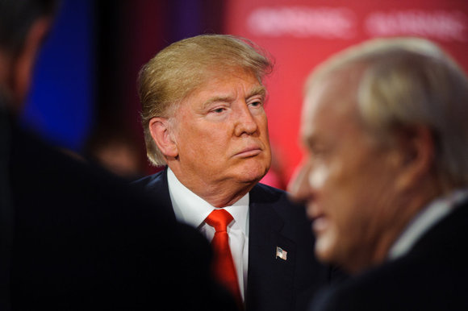

Trump: It was probably Russia that hacked the DNC, Clinton campaign

Russia was likely behind the hacks of the Democratic National Committee and Hillary Clinton's presidential campaign, U.S. President-elect Donald Trump has finally acknowledged. In his first news conference in about six months, Trump also said Wednesday that cybersecurity will be a top priority for his administration. He wants proposals on new hacking defenses within 90 days. "We get hacked by everybody," he said.
Trump's new found belief that Russia was responsible for cyberattacks during the presidential campaign comes after months of doubting U.S. intelligence reports that blamed Russia. But Trump also suggested U.S. intelligence may have leaked a 35-page dossier that accuses his campaign of working with Russian intelligence.
"As far as hacking, I think it was Russia," Trump said in his first press conference in about six months. "But I think we also get hacked by other countries and other people." Russia "shouldn't have done it; they won't be doing it," Trump added. "Russia will have far greater respect for us when I'm running the country.
Trump's statements about Russian hacking during the press conference are the closest he's come to agreeing with U.S. intelligence assessments that Russian hacked the DNC and the Clinton campaign in an effort to sway voters toward Trump. Trump's press conference came less than a day after news reports saying U.S. intelligence officials have briefed him last Friday about Russian intelligence claims that it has compromising professional and personal intelligence about him. Trump and spokesman Sean Spicer slammed those news reports, with Spicer calling the publication of an unverified 35-page dossier on Trump's relationship with Russian officials "irresponsible" and "salacious."
The unverified report, allegedly prepared by a former U.K. intelligence official, suggests the Trump campaign worked with Russian intelligence to smear presidential rival Clinton. It also claims Russia taped Trump sexual liaisons while he was in the country. Trump on Wednesday declined to comment on the briefing from U.S. intelligence officials last Friday, saying the contents of that briefing are "classified." Trump called the release of the 35-page report a "disgrace," and he suggested that U.S. intelligence officials may have leaked it. Many news organizations refused to publish that "nonsense released by, maybe intelligence agencies, which would be a tremendous blot on their record, if they, in fact, did that."
Trump said he has reviewed that report outside of his briefing with U.S. intelligence officials. The report was prepared by political opponents, he said. "It's all fake news," he said. "It's phony stuff. It didn't happen." Trump dismissed the report's suggestion that the Russians have videotape of him in compromising positions. "When I leave the country, I'm extremely careful," he said. Earlier on Wednesday, Rex Tillerson, Trump's nominee for secretary of state, said he was concerned about Russian hacking. U.S. intelligence reports of Russian election hacking are "troubling," Tillerson told a U.S. Senate committee. Asked if he believes Russian President Vladimir Putin ordered the election hacks, Tillerson said: "I think that's a fair assumption."